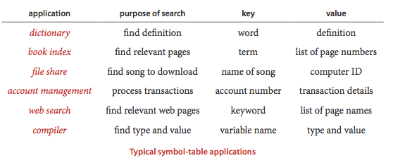

Sets, maps
A set is an collection of unique elements. Unlike lists, you cannot access an element by index.A set allows you to efficiently add or remove an element, or check if an element is in the set.

Source: Sedgewick p. 362
A map (also known as an associative array, dictionary, or symbol table) is a collection of key-value pairs. The keys are unique.
A map allows you to efficiently add or remove a pair (by its key), update the value of a given key, or look up the value of a given key.
A set is like a map with only keys and no values.
Sample code
UsingSetsMaps - Shows how to use Sets and Maps in the JCF.
(see also C++ version)
DuplicateDetection - Using a Set to detect duplicates.
Trees, hash tables
Sets and maps are typically implemented with either a tree or a hash table.TreeSet and HashSet (JCF) are tree and hash table implementations of the Set interface.
TreeMap and HashMap (JCF) are tree and hash table implementations of the Map interface.
TreeSets and TreeMaps keep their keys in sorted order, and each basic operation takes O(logn) time (worst-case).
HashSets and HashMaps do not keep their keys in any particular order, and each basic operation takes O(1) time (average-case).
The Set interface also supports the mathematical set operations union, intersection, and difference.